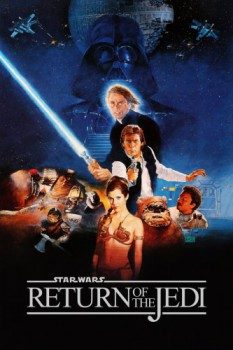

Country:United States, 132 minutes
Spoken languages:English
Genres:Adventure, Action, Sci-Fi
Director(s):Richard Marquand
Writer(s):Lawrence Kasdan, George Lucas
Video Codec:Unknown
Number: 3324

Certification:
Storyline:
Luke Skywalker leads a mission to rescue his friend Han Solo from the clutches of Jabba the Hutt, the Emperor prepares to crush the Rebellion with a more powerful Death Star, and the Rebel fleet mounts a massive attack on the space station. Luke Skywalker confronts Darth Vader in a final climactic duel before the evil Emperor.
Cast:
Mark Hamill (as Luke Skywalker), Harrison Ford (as Han Solo), Carrie Fisher (as Princess Leia), Billy Dee Williams (as Lando Calrissian), Anthony Daniels (as C-3PO)
Medium: Media file,
Location: D:\Star Wars\Star Wars Episode 6.mp4
Loaned: No
Aspect ratio: Unknown